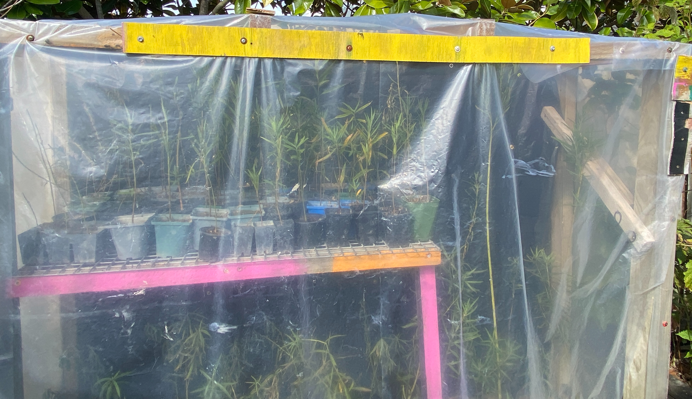
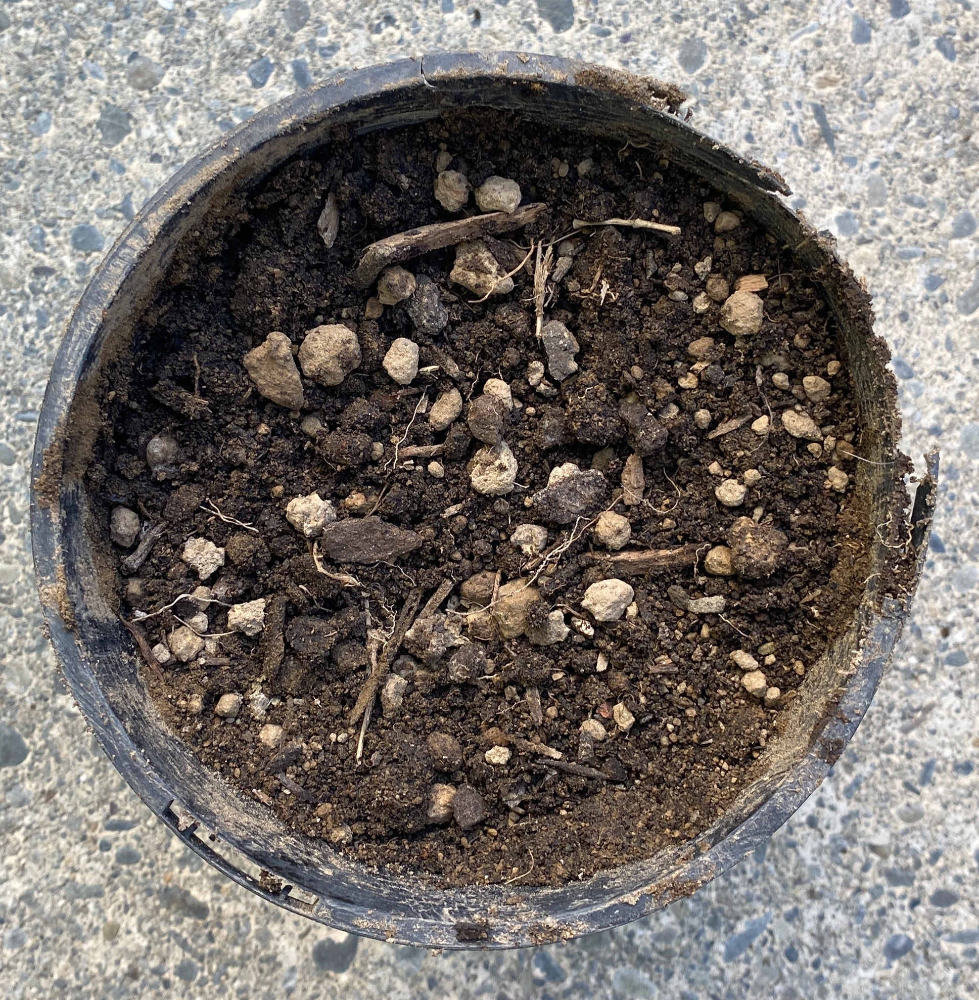
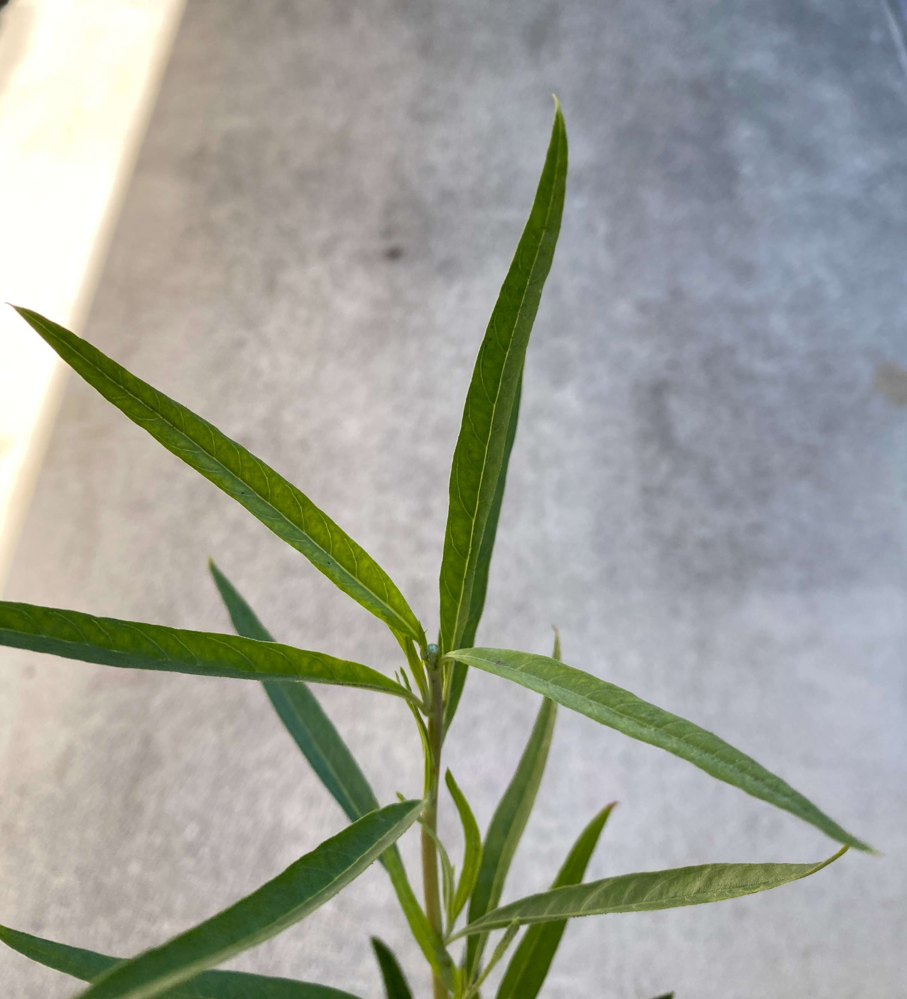
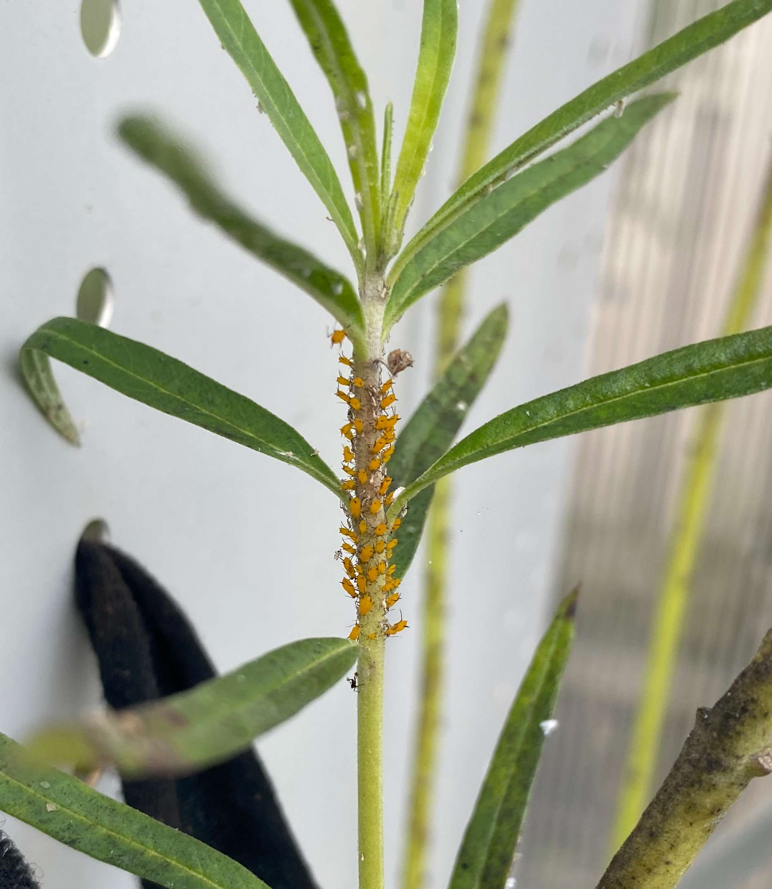
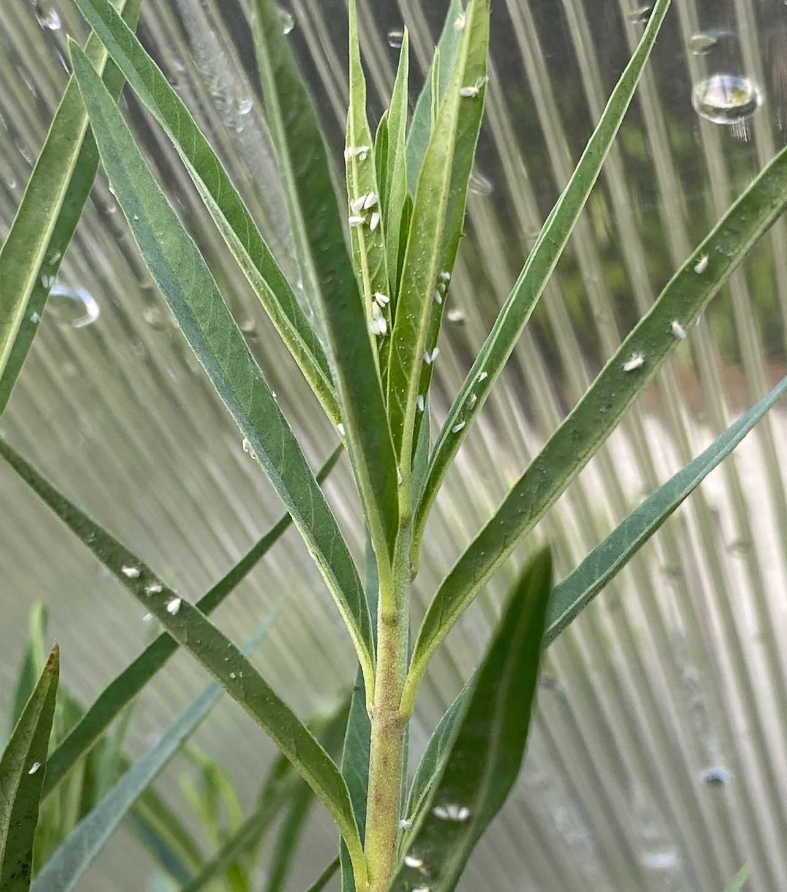

The use of a greenhouse to grow your swan plants in is very beneficial, it keeps unwanted bugs off your plant, accelerates growth through being warmer, as well as blocks out the Wellington wind. On top of this you get to control the environment that your plants grow in. However a warmer environment for the swan plants will cause the dirt they sit in to dry out quicker especially in the hot summer, meaning more watering will be required. The image shows a green house that I made, you could do the same or purchase a green house.
Using a mixture of different types of dirt will help you swan plants grow as they will be provided with a wider range of nutrients, leading to quicker and more stable growth. I recommend mixing dirt and compost together, and using this mixture at every repotting step.
Using a plant tonic accelerates your swan plants growth as it adds more nutrients for you swan plants to use in growth. I would recommend using a seaweed plant tonic, as this really helps swan plant growth. The Image shows a soil mix I use of compost and dirt, I also add plant tonic to help my swan plants grow.


Cutting off the very top of your swan plants has benefits for them as this will cause the plant to grow offshoots leading to a more bushy plant which will benefit your caterpillars. Simply do this with scissors and cut off the top 0.5 to 1 cm of plant and soon watch your swan plant grow offshoots. The Image shows a swan plant which I have cut the top 1cm off to help it grow more shoots.
The White sap in the swan plants can cause blindness if it comes into contact with the eye.
Yellow aphids are very annoying, but can be easy to get rid of, you just have to remain consistent. They typically are found at the top of your plant on the stem, they suck the juices from the plant slowly degrade its health. To get rid of them you can wash them off with a hose, wipe them off with your finger, or even use a spray, but just be careful the spray isn't harmful for the swan plant.
White flies are mainly found on the leaves of swan plants. the white flies also suck the juices from the plant as well as transmit viruses, this will lead to the plant dying. To get rid of them you can wipe them off while squashing them, or use a spray which won’t harm the swan plant.


While swan plants are great fun to have they come with potential issues, such as being toxic if consumed, to humans and animals. These problems can be mitigated by educating other particularly children on how toxic these plants can be so they aren't seen as food. As well as keeping swan plants out of the reach of animals who may see swan plants a food E.G. cats and dogs. This can be by putting something in front of the plant like a fence, so animals can't reach it, but having the top open for butterflies. You could also keep your swan plants in another part of the garden when animals can't walk into, This is what I do.
Swan plants can be very toxic to us humans and animals such as dogs and cats, if any parts of a swan plant are consumed, these effects could follow:
The White sap in the swan plants can cause blindness if it comes into contact with the eye.